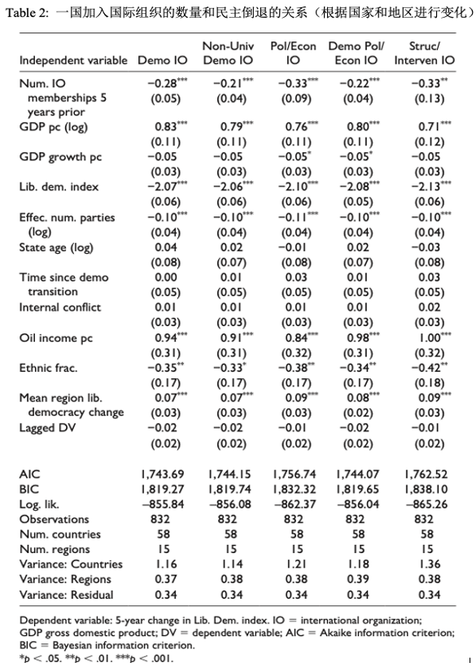

收录于合集

作品简介
【作者】 安娜·迈耶罗斯（Anna M.
Meyerrose），俄亥俄州立大学莫尚国际安全研究中心（Mershon Center for International Security Studies）研究员。主要研究国际因素与国内民主制度的相互作用，尤其关注在新兴和成熟民主国家中，外部行为者是如何同时为已有制度创造条件和挑战。
【编译】 杨稚珉（国政学人编译员，上海外国语大学国际关系与公共事务学院硕士）
【校对】 张曼娜
【审核】 刘瑛琛
【排版】 苏语涵
【美编】 马颖
【来源】 Meyerrose, AM (2020). The Unintended Consequences of Democracy Promotion: International Organizations and Democratic Backsliding. Comparative Political Studies ,53(10-11), 1547-1581.
【归档】 《国际关系前沿》2021年第2期，总第29期。
期刊简介
《比较政治研究》（ Comparative Political Studies ）为社会和政治科学期刊，期刊内容围绕国家间或国家内部这两个领域进行比较政治研究。该刊还致力于创新和健全比较方法，为比较政治学学科提供及时且深入的方法论、理论和实证研究。根据Journal Citation Reports显示，2020年，该期刊的影响因子为3.197。
民主促进的意外后果：
国际组织和民主倒退
The Unintended Consequences of Democracy Promotion:
International Organizations and Democratic Backsliding
Anna M. Meyerrose
内容提要
自冷战结束以来，由于受到国际社会的广泛支持，越来越多国家走上民主化道路。但近年来，这些新兴民主国家中的民主倒退案例却急剧增长。在这个国际社会空前支持民主的时代，为什么会出现这些民主倒退的现象呢？民主倒退指民选官员削弱或侵蚀了民主制度，导致民主形式的非自由化或是削弱，但民主倒退并不是专制。虽然国际组织在民主转型中发挥了重要作用，并且在大多数研究也证明其与积极的民主成果有所联系，但作者认为国际组织通常关注的重点在于行政权力和选举，容易忽视其他民主制度的发展，因此会无意中加速新兴民主国家的民主倒退。
国际组织以两种方式直接地导致了新兴民主国家的民主倒退。首先，根据它们与国家的互动方式，国际组织增加了国家对行政能力的提升；第二，作为成员国的资格要求又限制了各国国内政策选择，从而阻碍了制度的发展。作者通过研究发现，在三类国际组织——民主承诺组织、政治或经济组织、结构化或干涉主义组织中，一国加入越多国际组织，越容易发生民主倒退。同时，作者还测试并验证了国际组织与民主倒退之间的机制。
文章导读
01
全球范围内的民主促进与倒退崛起
许多研究显示，国际组织通常会帮助其成员国进行民主过渡及民主巩固。特别是部分国际组织与民主的关系尤其紧密，一类为欧盟（EU）、非盟（OAS）等明确表示促进和支持民主进程的国际组织；另一类则为具有明确政治或经济功能的国际组织，如国际货币基金组织（IMF）。但是，不同国际组织影响国内结果的能力各不相同。
图1
这些支持并积极介入民主促进的国际组织比例正随着时间变化稳步提高（Figure 1）。而随着这些国际组织对民主促进的日益重视，民主倒退的案例也在不断增加。由于民主倒退是一种渐进的过程，因此作者以五年为期，使用民主多样性数据库（the Varieties of Democracy dataset）中的自由民主指数（the Liberal Democracy index）来观察一国的民主倒退情况。通过观察各大洲民主国家民主倒退比例的年度变化（Figure 2），作者认为随着时间的推移，特别在冷战结束以后，民主倒退变得越来越普遍。
图2
目前，学界对于民主倒退的研究依旧集中于国内因素的讨论，并未探究国际行为体或是国际组织在民主倒退中起到怎样的作用。而作者认为，由于新兴民主国家在民主化的进程中极易受到国际行为体的影响，因此在研究民主倒退时关于外部因素的讨论也十分重要。
02
国际组织与民主倒退间的联系
作者认为，对于新兴民主国家而言，作为国际组织的成员国易导致民主倒退的发生。首先，作者讨论了大多数与民主相关的国际组织都过度强调精英统治与选举政治，从而疏忽了对其他民主制度的支持，因此国家就更易在未来发生民主倒退。其次，国际组织提升成员国的行政权力的同时也对其国内制度的选择有所限制，因而阻碍了民主制度的深度发展，会直接导致民主倒退的发生。综合这些因素，作者提出，若一个国家拥有相对强势的行政权力但制度力量不足时极易发生民主倒退。
根据以上观点，作者提出本研究的三项假设。
假设一：对于新兴民主国家而言，加入民主承诺组织、政治或经济组织、结构化组织的数量变化与其民主水平的变化或倒退相关联。
假设二：一国增加在上述三类国际组织中的成员身份，将会导致其行政权力的增加（相较于其他国内制度）。
假设三：增加在有政策要求的国际组织中的成员身份将会减少一国的国内政策选择空间，并阻碍制度发展。
总的来说，作者预测，对于新兴民主国家而言，参与越多与民主相关的国际组织，就越可能发生民主倒退。
03
其他解释
通过观察国际组织与新兴民主国家发生的民主倒退间的联系，作者认为还可能存在以下其他解释。首先，冷战后与国际组织的扩散同时发生的全球化现象，可能导致民主倒退。正如国际组织能做到的一样，经济一体化通过自由贸易协定等方式限制了许多国家的国内政策选择。因此全球化成为作者需要控制的变量之一。
国家特征和文化因素也可用于解释民主倒退的发生，同时也说明了为什么民主倒退只是发生在部分国家中，作者认为倒退的根本在于强大的精英阶层被薄弱的制度所包围。此外，即使在那些没有发生民主倒退的国家，其民主化的成功程度也是不尽相同的。因此，并不是所有的新兴民主国家都有着相同的制度结构，但多数国家都是国际组织的成员并且成为民主促进的对象，作者据此认为国际组织会是民主倒退发生的原因之一。
04
研究设计
作者使用国际组织成员数和制度后果来检验假设一，即一国加入的与民主相关的国际组织越多，越容易发生民主倒退。
1.因变量
作者使用自由民主指数作为因变量，但不再是关注国际组织与民主水平间的关系，而是考虑民主在时间上的变化。因为倒退是一个渐进的过程，仅选取一年的变化并不能捕捉到这一现象，所以作者将因变量定为五年内的自由民主指数变化。如因变量在这一期间为负值，则表明这一国家在五年间经历了民主倒退，若为正值则表示民主进步。
2.自变量
作者将自变量定为一国加入国际组织的数量，特别是在本研究中，作者主要关注了三类与民主促进相关的国际组织：民主承诺型国际组织、政治或经济组织以及结构化国际组织。
民主承诺型国际组织（Democratically committed IOs）是指将民主、人权或法治纳入其组织性文件的组织。作者根据成员国是否能主动维持民主标准将此类组织划分为两组，一组为具有通用资格的国家，另一组为非通用资格国家。而政治或经济组织（political and economic organizations）通常是通过为新兴民主国家提供公共产品或技术援助来促进民主巩固的国际组织，作者使用了波斯特（Poast）和乌尔佩莱宁（Urpelainen）于2015年创建的分类数据。最后，作者认为结构化国际组织最可能影响国家行为从而导致国内后果，为了区分这些组织，她使用了伯默尔（Boehmer）等人的三层编码方案。
作者通过例证说明了以上三种类型的国际组织并不互斥（Table 1），选取一国加入上述三种类型国际组织的数量作为主要的自变量，且由于因变数的时间跨度为5年，因此该实验通过观察某一国家5年前加入国际组织的数量及其后续5年间民主水平变化进行研究。
表1
3.控制变量
首先，由于需控制与民主相关的国家和地区特征，作者选取了人均国内生产总值（GDP per capita）和人均国内生产总值增长值（GDP growth per capita）作为控制变量，还将政党的有效数量、国家成立年数、开始民主过渡时间等数据纳入控制范围。为了控制扩散效应，作者还计算了一段时间内某一地区自由民主分数的平均变化。此外，根据一些民主理论，作者还将国内冲突作为因素之一进行考量，并加入了人均石油收入以及民族分化程度等因素。
由于因变量是一个国家民主水平的变化，作者在进行观察之前需对国家的民主水平程度进行解释，因此作者加入了一个变量用以衡量在观察研究开始之前5年的自由民主指数。
05
研究结果与稳定性评估
实验结果（Table 2）印证了假设一：加入越多的国际组织与相继发生的民主倒退有关。在表中可见，各主要变量的系数均为负，这可以解释为5年内自由民主指数的变化量与加入额外的国际组织有关。以匈牙利为例，从2009年（欧尔班上台前一年）至2017年间，匈牙利的自由民主指数下降了0.2，表2中各主要自变量的系数也在-0.31～-0.2间徘徊。换句话说，每多加入一个国际组织，一个国家民主倒退的程度至多为0.2（2009～2017年间匈牙利所下降的自由民主指数）的1.5倍。
表2

这些结果在其他参数下也十分稳定。作者首先改变了观察民主程度变化的时间跨度；还扩大了测算年限；再加入全球化因素进行测算；还增加了专制国家和介于专制与民主间的国家进行测算。以上不同情形下的测算结果都与本实验中所得出的结论相似。
作者还提出，研究中可能存在反向因果关系： 新兴民主国家加入国际组织是为了防止可能发生的民主侵蚀，尽管民主倒退也在发生。 为了检验这一点与其他选择性偏差，作者估算了赫克曼（Heckman）所提出的两阶段选择模型，仍然找到了民主承诺型国际组织和政治或经济组织与民主倒退相关联的证据。
最后，一个理想的实验应该包括加入国际组织和不加入国际组织两组对照实验存在，但据作者观察几乎所有的新兴民主国家都是此类与民主相关的国际组织成员。因此，作者使用广义综合控制法（the generalized synthetic control method），并以欧盟为例测验出了相似的结果。
06
研究结果与稳定性评估
作者认为国际组织通过增加相对行政权力以及限制国内政策空间的方式导致了民主倒退，阻碍了制度发展。在这一章节中，作者将通过测试并找到支撑这些机制的证据。
1. 行政权力
国际组织通过内部赋予国家管理者对国内成果的控制权来提升国家行政权力。这种给予国家管理者单方面作出决策的国际机会极易通过充分制度化的国际组织来影响国内政策，并且随着国家加入的国际组织越多，这种受到干预的机会也就越多。作者通过民主多样性数据库中的横向问责指数（horizontal accountability index）来衡量行政权力的大小，选取五年间国家层面行政权力的横向问责指数，并将政府领导人任职年限、执政党是否拥有多数席位、是否卷入内部或外部冲突、人均石油收入、人均国内生产总值、人均国内生产总值增长值、国家民主程度和国家成立年数作为控制变量。此次实验的案例选择范围是1946年至2015年的新兴民主国家，其结果（Table 3）也印证了假设二。
表3

2. 国内政策空间
国内政策空间是指政治行为者可以采取和实施的政策范围。在成熟的民主国家，不同的政党会采取不同的政策立场来区分彼此，因此如果国内政策空间受到限制将使不同党派的意识形态逐渐趋同。
在这一实验中，因变量为一个国家政党的纲领在五年内的显著变化，主要通过各政党公开发表的宣言在内容或意识形态上的差异程度体现。该变量按5分为标准编码，0分表示很少或没有与其他党派不同的意见，而5分则表示在公开宣言中有自己的独特声明。因此，该指数的下降也表明随着时间推移，各党派的意见趋同，政策空间缩小。
在自变量的选取上，作者从能否对成员国产生实质性政策影响出发，选择了结构性国际组织和政治或经济类组织两者的数据。同时，在控制变量的选择中考虑了可能影响政党平台和意识形态发展的因素，以及政党差异性变量、滞后性变量会带来的影响。实验结果（Table 4）也印证了假设三：国际组织限制了成员国的国内政策空间。
表4
07
结论
通过上文的研究，作者认为国际组织尽管总体上起到了民主促进的作用，但它们在持续推动民主化进程中手段不足，甚至可能在无意中导致新兴民主国家的民主倒退。关于未来的研究，作者认为还需继续研究是否能找到一种更精准的跨国家衡量方式，来测算国家与国际组织之间的互动，以说明哪些国际组织能够推动以及如何推动本文所讨论的民主倒退。
民主化和制度建设是一个充满不稳定性的渐进过程，它们对民主政体的长期生存至关重要。特别是20世纪80年代以来，国际社会中一直存在强调选举和精英治理而不顾国内制度发展的情况。根据本文研究，作者建议国际组织在推动民主化进程中应该适当调整方式，不能仅满足于促进一个程序民主的国家。在全球化的背景下，各国难以在不受外部影响的情况下实现现代化及健全民主制度。因此，国际组织也应该在新兴民主国家的制度设计上投入更多的资源，使用多样化的民主促进手段，将目前集中在选举和行政权力的精力分给其他的的民主制度。同时，国际组织自身也应该逐渐推进施政需求，而不是要求新兴民主国家在体制发展的早期阶段就遵守广泛条件。所以，通过直接或间接地支持除选举以外的制度发展，国际组织可帮助新兴民主国家逐步抵消它们所面临的挑战。
译者评述
在政治发展中，若一国期望向现代化、民主化方向发展，其执政合法性、政府有限性以及民众广泛参与程度都是重要的衡量标准。而国际组织作为当代国际社会中最重要的行为体之一，既起到了监督与维护当前国际秩序的作用，同时也在无形中为国家行为体带来一定压力。
在研究民主转型的理论中，由于受到思维定式的影响，大部分研究都将研究对象的范围局限于国家内部，即使有学者考虑到国际因素，也往往将它们作为民主转型的次要因素或前提条件进行解释。【1】而正如本文作者所言，在全球化的背景下，所有国家都无法逃离外界因素的影响，特别是冷战后掀起的民主化浪潮，更是直接受到来自国际社会因素的推动。所以，本文作者采用定量研究的方式，找到了新兴民主国家的民主化程度与加入国际组织之间的关系，发现加入越多的国际组织，不但没有为这些国家的民主制度发展添砖加瓦，反而产生了反作用，发生了民主倒退。由于国际组织重视新兴民主国家内部的行政治理权力平衡，将重点放在选举制度与精英治理方面，同时也限制了这些国家的国内政策选择范围，使民主制度发展受到阻碍。
其实，民主化的过程是由民主转型和民主巩固所构成，大部分国际组织能够为新兴民主国家所贡献的是带领其走上民主转型的道路，给予一定物质以及技术上的指导与支持。但在转型之后该如何巩固民主成果则成为新兴民主国家需要自己面对的问题，国际组织无法也力所不能及将所有的民主化过程包揽，如民族问题的纠缠是许多新兴民主国家需面对的挑战，该如何设计一个保障民主运转的多民族治理制度阻碍了民主巩固的发展和深化【2】。因此，基于本文的讨论，我们也可思考国际组织如何在民主巩固中发挥作用，给予新兴民主国家更多制度建设上的指导，而非仅仅浮于“民主”二字本身所代表的权力与体制。
参考文献
[1] 张伟玉：《民主转型理论：研究路径、评论及发展》，载《国际政治科学》，2015年第3期，第108页。
[2] 祁玲玲：《从乐观到审慎:新兴民主国家民主巩固困境的实证研究》，载《江苏社会科学》，2012年第5期，第128页。
词汇整理
文章观点不代表本平台观点，本平台评译分享的文章均出于专业学习之用, 不以任何盈利为目的，内容主要呈现对原文的介绍，原文内容请通过各高校购买的数据库自行下载。

好好学习，天天“在看”

国政学人
支持学术公益与知识传播
微信扫一扫赞赏作者 __赞赏
已喜欢，对作者说句悄悄话
取消 __
发送给作者
发送
最多40字，当前共字
上一页 1/3 下一页
长按二维码向我转账
支持学术公益与知识传播
受苹果公司新规定影响，微信 iOS 版的赞赏功能被关闭，可通过二维码转账支持公众号。